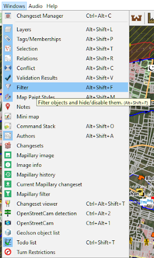
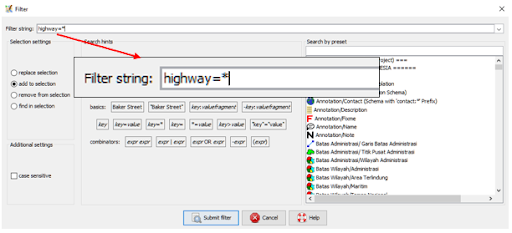
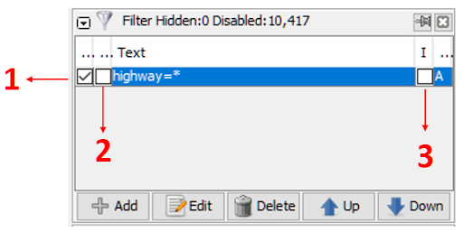
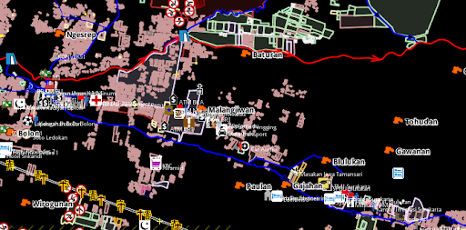
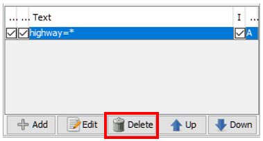
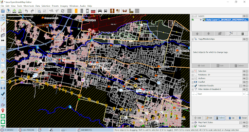

Using Filter on JOSM
Objectives:
- To be able to activate data filtering mode on JOSM
- To be able to operate a data filtering tool on JOSM
JOSM has many tools that can be used by the user to make mapping things easier, like a filter tool. Filter tool is an additional tool that allows you to select or shown only certain objects on JOSM based on key and value on OpenStreetMap. With these tools, you can edit or check specific data on OSM. Filter tool allows you to see only an object based on its attribute, so you don’t need to look at all the data if you only want to look at specific objects.
I. Activating Filter Window on JOSM
- To activate filter window, you can click Window then click Filter 
- Window filter will show up on the right side of your screen.

II. Using Filter Tool on JOSM

Imagine that you have data set like the picture above. Most people will get confused when they see complicated data like that. To make it simpler, you can use filters to select which object you want to see on the JOSM. For example, we will do filtering for highway. For doing so, you need to follow these steps:
- On filter window, click Add menu.

- On Filter string section, you need to input the key and value that you want to be filtered. In this example, please write highway=* (if you want to select all highway object available). After that, select **Submit filter.** 
- On the filter window, you will see three checklist square. 
- If you only activate square checkbox on number 1, all highway object will be shown as hidden but you still can see the object in the shade of black color.

- If you activate checkbox number 1 and number 2, then all highway object will be shown as fully hidden on layer window. 
- If you activate checkbox on number 1, 2 and 3, then you will only see highway object on JOSM.
Remember when you using filter on JOSM, the result of your filter will always automatically show up even if you close you JOSM or change the location of your mapping area. If these things happen, it will cause another problem. If you still on the same filter mode (highway=*) and you change your mapping area, you will not see the existing highway on your mapping area. If you’re not careful enough, there are any changes you can make mistakes and draw the same exact highway existing before. Therefore, please make sure you already turn off filtering mode after you finish using filter function. You can check whether your filter mode is activated by checking your right side of your map canvas on JOSM. If you see Filter active still come up, it means that filter mode is currently active.

To delete active filter, select which filter you want to erase on filter window, then select Delete button.

After you delete the filter mode, you can see your OpenStreetMap data as it should be with the whole object show up on the map canvas. 
Note:
When you using filter on JOSM, the result of your filter will remain on your JOSM whenever you open JOSM. Make sure you always delete your filter function after using it!
SUMMARY
After you managed to follow all these steps, now you already learn what is filter mode about on JOSM. You also already have knowledge of how to do filter on JOSM to select which data you only want to see. Use filter mode to help you and make your mapping things easier.